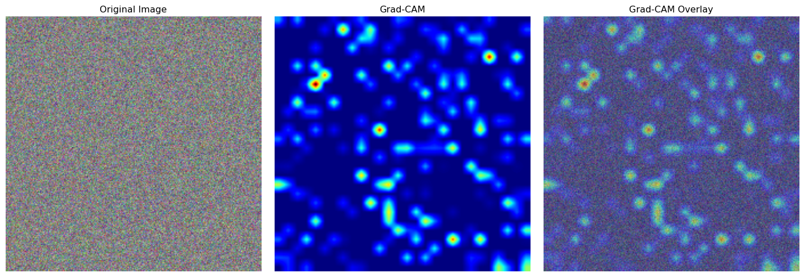
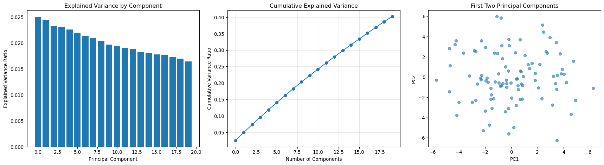

Model inference and feature extraction are crucial for applying trained models to satellite imagery analysis and extracting meaningful representations.
import torchimport torch.nn as nnimport torch.nn.functional as Fimport numpy as npimport matplotlib.pyplot as pltfrom sklearn.decomposition import PCAfrom sklearn.manifold import TSNEimport seaborn as snsprint(f"PyTorch version: {torch.__version__}")print(f"CUDA available: {torch.cuda.is_available()}")
PyTorch version: 2.7.1
CUDA available: False
Basic Inference Patterns
Single image inference
class GeospatialClassifier(nn.Module):"""Example geospatial classifier for demonstration"""def__init__(self, num_channels=6, num_classes=10, embed_dim=256):super().__init__()# Feature extraction layersself.conv1 = nn.Conv2d(num_channels, 64, 7, stride=2, padding=3)self.conv2 = nn.Conv2d(64, 128, 3, stride=2, padding=1)self.conv3 = nn.Conv2d(128, 256, 3, stride=2, padding=1)# Global pooling and classificationself.global_pool = nn.AdaptiveAvgPool2d(1)self.classifier = nn.Linear(256, num_classes)# Feature embedding layerself.feature_embed = nn.Linear(256, embed_dim)def forward(self, x, return_features=False):# Feature extraction x = F.relu(self.conv1(x)) x = F.relu(self.conv2(x)) features = F.relu(self.conv3(x))# Global pooling pooled =self.global_pool(features).flatten(1)# Classification logits =self.classifier(pooled)if return_features: embeddings =self.feature_embed(pooled)return {'logits': logits,'features': embeddings,'spatial_features': features,'pooled_features': pooled }return logits# Create modelmodel = GeospatialClassifier(num_channels=6, num_classes=10, embed_dim=256)model.eval()# Single image inferencesample_image = torch.randn(1, 6, 224, 224) # Batch of 1, 6 channelswith torch.no_grad():# Basic inference predictions = model(sample_image)# Inference with features outputs = model(sample_image, return_features=True)print(f"Input shape: {sample_image.shape}")print(f"Predictions shape: {predictions.shape}")print(f"Logits shape: {outputs['logits'].shape}")print(f"Features shape: {outputs['features'].shape}")print(f"Spatial features shape: {outputs['spatial_features'].shape}")
class FeatureExtractor:"""Extract features from specific layers of a model"""def__init__(self, model, layer_names=None):self.model = modelself.model.eval()self.features = {}self.hooks = []if layer_names isNone:# Extract from all named modules layer_names = [name for name, _ in model.named_modules() if name]self.register_hooks(layer_names)def register_hooks(self, layer_names):"""Register forward hooks for feature extraction"""def make_hook(name):def hook(module, input, output):# Store detached copy to avoid gradient trackingifisinstance(output, torch.Tensor):self.features[name] = output.detach().cpu()elifisinstance(output, (list, tuple)):self.features[name] = [o.detach().cpu() ifisinstance(o, torch.Tensor) else o for o in output]elifisinstance(output, dict):self.features[name] = {k: v.detach().cpu() ifisinstance(v, torch.Tensor) else v for k, v in output.items()}return hook# Register hooksfor name, module inself.model.named_modules():if name in layer_names: handle = module.register_forward_hook(make_hook(name))self.hooks.append(handle)print(f"Registered hook for layer: {name}")def extract(self, images):"""Extract features from registered layers"""self.features.clear()with torch.no_grad():# Forward pass triggers hooks _ =self.model(images)returnself.features.copy()def remove_hooks(self):"""Remove all registered hooks"""for hook inself.hooks: hook.remove()self.hooks.clear()# Create feature extractorextractor = FeatureExtractor( model, layer_names=['conv1', 'conv2', 'conv3', 'global_pool'])# Extract featuressample_input = torch.randn(4, 6, 224, 224)extracted_features = extractor.extract(sample_input)print("Extracted features:")for layer_name, features in extracted_features.items():ifisinstance(features, torch.Tensor):print(f"{layer_name}: {features.shape}")else:print(f"{layer_name}: {type(features)}")# Clean upextractor.remove_hooks()
/Users/kellycaylor/mambaforge/envs/geoAI/lib/python3.11/site-packages/torch/nn/modules/module.py:1842: FutureWarning:
Using a non-full backward hook when the forward contains multiple autograd Nodes is deprecated and will be removed in future versions. This hook will be missing some grad_input. Please use register_full_backward_hook to get the documented behavior.

Feature Analysis and Dimensionality Reduction
PCA analysis of features
def analyze_features_pca(features, n_components=50, visualize=True):"""Analyze features using PCA"""# Flatten features if neededif features.dim() >2: original_shape = features.shape features_flat = features.view(features.shape[0], -1)else: features_flat = features original_shape = features.shape# Convert to numpy features_np = features_flat.numpy()# Apply PCA pca = PCA(n_components=n_components) features_pca = pca.fit_transform(features_np)# Analyze explained variance explained_var_ratio = pca.explained_variance_ratio_ cumulative_var = np.cumsum(explained_var_ratio)if visualize: fig, axes = plt.subplots(1, 3, figsize=(18, 5))# Explained variance axes[0].bar(range(len(explained_var_ratio)), explained_var_ratio) axes[0].set_title('Explained Variance by Component') axes[0].set_xlabel('Principal Component') axes[0].set_ylabel('Explained Variance Ratio')# Cumulative explained variance axes[1].plot(cumulative_var, marker='o') axes[1].set_title('Cumulative Explained Variance') axes[1].set_xlabel('Number of Components') axes[1].set_ylabel('Cumulative Variance Ratio') axes[1].grid(True, alpha=0.3)# First two components axes[2].scatter(features_pca[:, 0], features_pca[:, 1], alpha=0.6) axes[2].set_title('First Two Principal Components') axes[2].set_xlabel('PC1') axes[2].set_ylabel('PC2') plt.tight_layout() plt.show()return {'features_pca': features_pca,'explained_variance_ratio': explained_var_ratio,'cumulative_variance': cumulative_var,'pca_model': pca }# Generate sample features for analysissample_features = torch.randn(100, 256) # 100 samples, 256 featurespca_results = analyze_features_pca(sample_features, n_components=20)print(f"PCA features shape: {pca_results['features_pca'].shape}")print(f"First 5 components explain {pca_results['cumulative_variance'][4]:.1%} of variance")

PCA features shape: (100, 20)
First 5 components explain 11.8% of variance
t-SNE visualization
def visualize_features_tsne(features, labels=None, perplexity=30, random_state=42):"""Visualize features using t-SNE"""# Flatten features if neededif features.dim() >2: features_flat = features.view(features.shape[0], -1)else: features_flat = features features_np = features_flat.numpy()# Apply t-SNEprint("Computing t-SNE embedding...") tsne = TSNE(n_components=2, perplexity=perplexity, random_state=random_state) features_tsne = tsne.fit_transform(features_np)# Create visualization plt.figure(figsize=(10, 8))if labels isnotNone:# Color by labels unique_labels = np.unique(labels) colors = plt.cm.tab10(np.linspace(0, 1, len(unique_labels)))for i, label inenumerate(unique_labels): mask = labels == label plt.scatter(features_tsne[mask, 0], features_tsne[mask, 1], c=[colors[i]], label=f'Class {label}', alpha=0.6) plt.legend()else: plt.scatter(features_tsne[:, 0], features_tsne[:, 1], alpha=0.6) plt.title('t-SNE Visualization of Features') plt.xlabel('t-SNE 1') plt.ylabel('t-SNE 2') plt.grid(True, alpha=0.3) plt.show()return features_tsne# Generate sample data with labelssample_features = torch.randn(200, 256)sample_labels = np.random.randint(0, 5, 200) # 5 classes# Visualize with t-SNEtsne_features = visualize_features_tsne(sample_features, sample_labels)print(f"t-SNE features shape: {tsne_features.shape}")